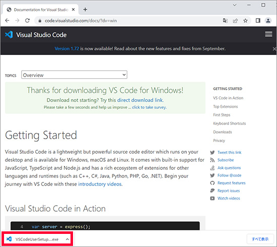
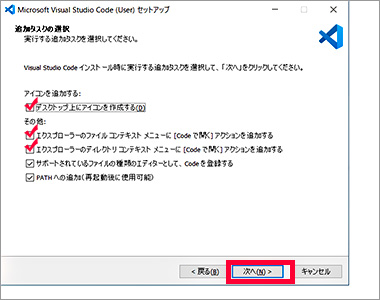

Visual Studio Code – コード エディター | Microsoft Azure
https://azure.microsoft.com/ja-jp/products/visual-studio-code/
↑のサイトに行き「Visual Studio Codeをダウンロードする」ボタンを押す
（2）
ダウンロードページに飛ぶので「↓ Windows」ボタンを押す
（3）

自動的にダウンロードが始まる
（4）
「PC」→「ダウンロード」フォルダを開く
（5）
ダウンロードした実行ファイル（.exe）をダブルクリックする
※ファイル名はバージョンにより変化
（6）
インストールが始まる
「同意する」にチェックを入れて「次へ」を押す
（7）
インストール先の指定はそのままで
「次へ」を押す
（8）
スタートメニューフォルダーの指定はそのままで
「次へ」を押す
（9）

上の3つの空欄にチェックを入れて
「次へ」を押す
（10）
「インストール」を押す
（インストールが完了するまでしばらく待つ）
（11）
「Visual Studio Codeを実行する」にチェックを入れたまま
「完了」を押す
以下動作確認
（最低限立ち上がれば、他は後からでも直せるのでOK）
（12）
Visual Studio Codeが立ち上がればOK
デスクトップにショートカットが出来ていればOK
（13）
開始ページ（スタートページ、Welcomeページ）に移動するので
起動時に表示するのチェックを外す
（14）
開始ページ（スタートページ、Welcomeページ）自体も閉じておく
（次回以降、VSCを起動すると表示されなくなっている）
（15）
適当なテキストファイル（.txt）を右クリックして
「Codeで開く」のメニューがあればOK
※.htmlや.cssファイル単体で開きたい場合はこちらを使う
（16）
適当なフォルダを右クリックして
「Codeで開く」のメニューがあればOK
プロジェクトフォルダを丸ごと開きたい場合はこちらを使う